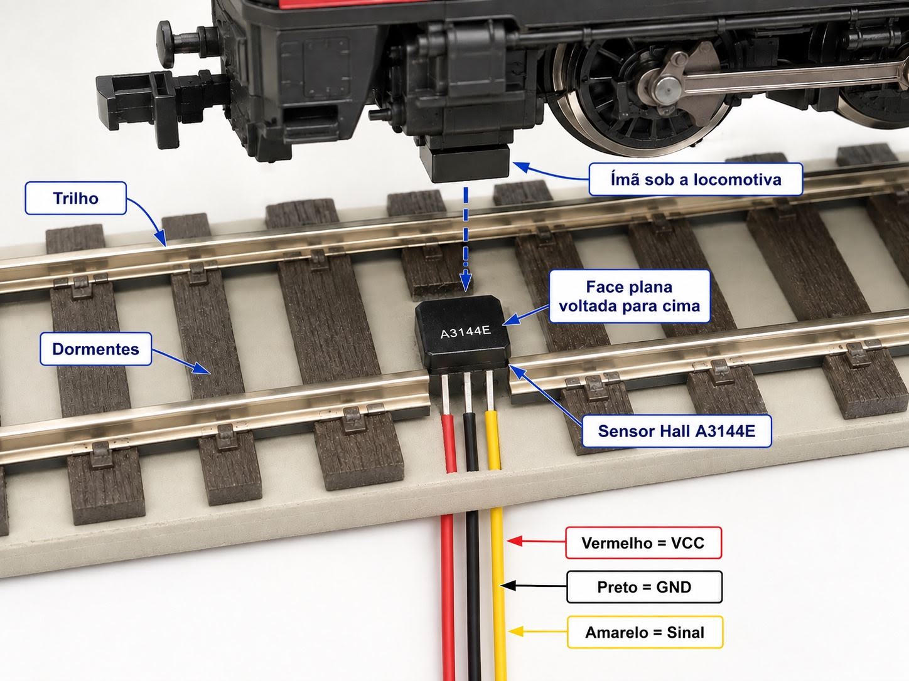
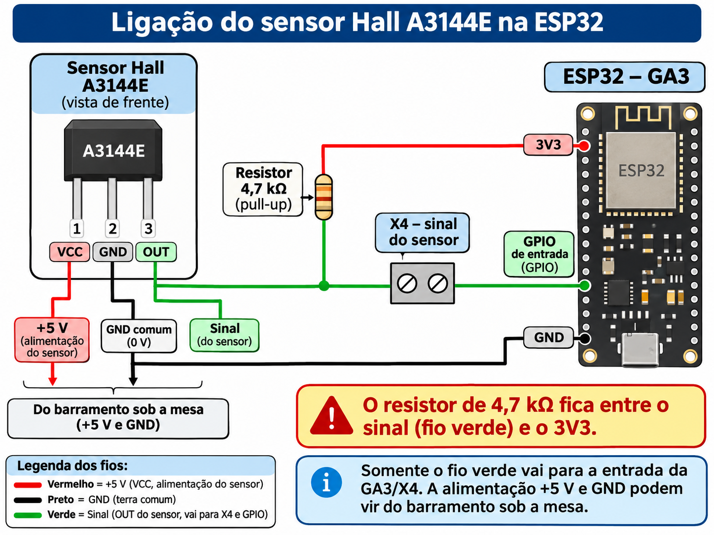

Como instalar e interligar um sensor Hall
A automação da Ferrovia EFMN 74 utiliza sensores Hall para detectar a passagem das locomotivas em pontos estratégicos da maquete. O sensor é instalado junto à via e identifica a presença do ímã fixado na parte inferior da locomotiva. Além da instalação física, é necessário fazer a interligação elétrica correta entre o sensor e a gaveta de controle responsável pela leitura do sinal.

Finalidade do sensor Hall
O sensor Hall informa ao sistema de controle a presença da locomotiva nos pontos de detecção. Essa informação é utilizada nas rotinas de automação e nos procedimentos de segurança da ferrovia.
Instalação física do sensor
O sensor deve ser instalado entre os dormentes, ou em posição equivalente, para que o ímã da locomotiva passe diretamente sobre sua região de detecção. O conjunto não deve interferir na passagem das rodas, nos trilhos ou nas partes móveis dos desvios. Os terminais e as soldas devem ficar protegidos sob a mesa.
Ligações elétricas
O A3144E tem três terminais. Olhando a face plana com as inscrições voltadas para a frente e as pernas para baixo, a sequência é:
| Terminal | Ligação | Identificação do fio |
|---|---|---|
| 1 — VCC | +5 V estabilizados | Vermelho |
| 2 — GND | Negativo comum da fonte e da ESP32 | Preto |
| 3 — OUT | Borne de sinal da gaveta e GPIO da ESP32 | Verde |
Os fios de +5 V e GND podem ser conectados ao barramento sob a mesa, se esse barramento fornecer efetivamente 5 V contínuos estabilizados e compartilhar o GND com a gaveta. Assim, apenas o fio verde do sinal precisa seguir até o borne correspondente na gaveta de controle.
Interligação com qualquer gaveta de controle
O sinal OUT chega ao borne reservado ao sensor e, desse borne, segue para a entrada GPIO da ESP32. O resistor de 4,7 kΩ deve ser instalado entre o sinal e o terminal 3V3 da ESP32. O resistor é do tipo pull-up e não fica em série com o fio verde.

Como funciona
Sem o campo magnético de atuação, a entrada da ESP32 lê normalmente HIGH. Quando o polo correto do ímã se aproxima suficientemente do sensor, a saída passa a LOW. A leitura retorna a HIGH após o afastamento do ímã.
Cuidados na instalação
- Confirmar os terminais do componente antes de fazer as soldas.
- Identificar o sensor e o borne de destino na gaveta.
- Proteger as emendas e evitar esforços mecânicos nos fios.
- Confirmar o GND comum entre a fonte de 5 V e a ESP32.
- Testar cada sensor antes de fixá-lo definitivamente e aplicar lastro.
Teste preliminar
Com o circuito alimentado, utilizar um programa simples de leitura digital na IDE do Arduino. Aproximar e afastar o ímã do sensor e verificar a alternância entre LOW e HIGH no Monitor Serial. Caso não haja mudança, inverter o polo do ímã e revisar a alimentação, o GND, o resistor pull-up e o GPIO configurado.
Considerações finais
A instalação correta dos sensores Hall e sua interligação às gavetas de controle permitem uma detecção confiável das locomotivas e facilitam a manutenção e a automação da Ferrovia EFMN 74.